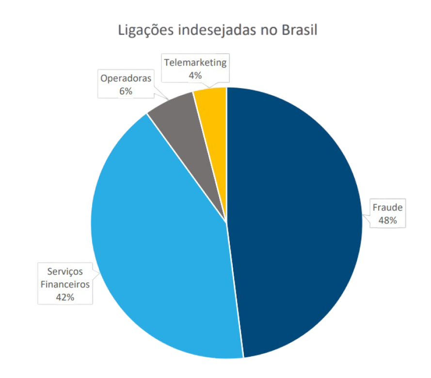

O Brasil é o país que mais sofre com ligações de spam no mundo.
Desde 2017, as chamadas telefônicas de spam no Brasil aumentaram 141%.
O brasileiro recebe em média 49,9 ligações de spam por mês.

O que é?
Chamadas Verificadas
Esse novo recurso do Google, exclusivo para telefones Android,
permite que empresas exibam para o cliente na hora da chamada sua marca,
logotipo e até mesmo o motivo da chamada.
A Telecall é a primeira operadora de telecom no Brasil a oferecer esse recurso do Google.
Compatibilidade
Exclusivo para sistema operacional Android através do aplicativo Telefone.
Pré-instalado em telefones mais recentes ou pode ser baixado
do Google Play Store para a maioria dos dispositivos com Android 9.0.
Hoje no Brasil existem quase 239 milhões de celulares smartphone ativos,
sendo que o sistema Android detém uma participação de mais de 86% do mercado
de sistema operacional móvel no país.
Como Funciona?
Uma chamada telefônica de uma empresa assinante é feita para um cliente potencial ou existente.
Em nanossegundos, a solicitação é encaminhada para a plataforma da Telecall que processa a chamada e
adiciona as informações verificadas antes de encaminhá-la ao destinatário.
As informações aparecem na tela do celular do recipiente que atenderá a ligação com uma chamada de voz normal.
Beneficios
Estabeleça Confiança
Clientes são mais propensos a atender chamadas de organizações com os quais estão familiarizadas
e com as quais já tem relação.
Agilize a Conexão
Quando o motivo da chamada é claro, a chance de o cliente atender é muito maior e a
conexão com ele mais rápida e eficiente.
Melhore a experiência do Cliente
O nome da marca, logotipo e a visualização do motivo da chamada oferecem uma
experiencia melhor e muito mais amigável para o cliente.
Usos
Aviso de problemas de fraude de cartão de crédito.
Aviso de atrasos e cancelamentos de voos.
Agendamentos de serviços, entregas, reparos e instalações.
Avisos sobre agendamentos, exames e resultados.
Oferecer uma melhor experiência de vendas e promoções.